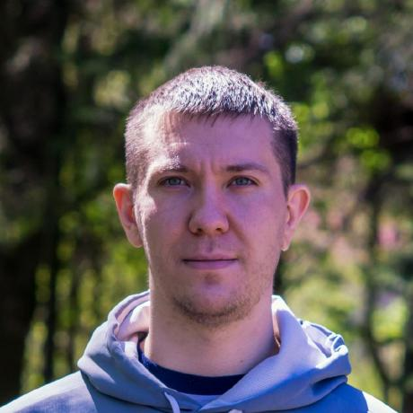

 |
Kaliuzhnyi YevhenFront-End Developer |
Contacts
ev.klzn@gmail.com
t.me/ev_klzn
+380000000000
https://github.com/ev-klzn
|
2022 ORT-Dnipro - Fundamentals of programming and web development (JavaScript, HTML, CSS)
2008-2012. Kryvyi Rih National University with a degree in Mining Machines and Complexes. Qualification: mining mechanical engineer
2004-2008. Mining College of Kryvyi Rih Technical University, specialty "Operation and repair of mining electromechanical equipment and automatic devices" with honors. Qualification: mining technician-electromechanic